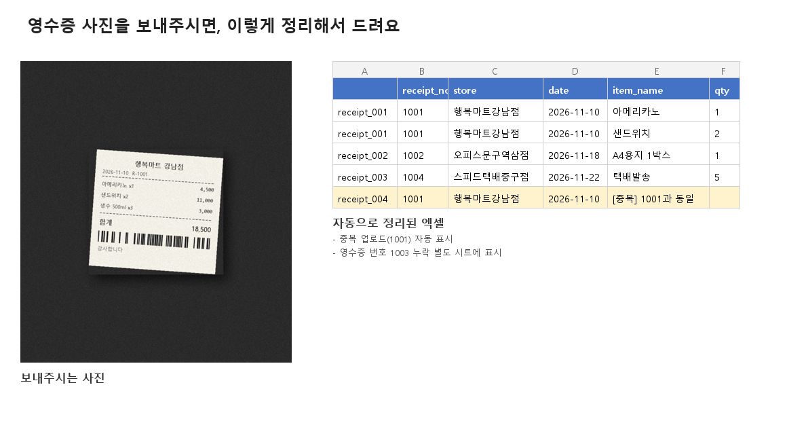

사진 한 장이 이렇게 바뀌어요
왼쪽 사진을 보내면, 오른쪽처럼 정리된 엑셀을 받아요.

결과 (데모 기준)
| 항목 | 결과 |
|---|---|
| 처리한 영수증 | 4장 |
| 인식된 품목 | 11건 |
| 중복 탐지 | 1건 (영수증번호 1001) |
| 누락 탐지 | 1건 (영수증번호 1003) |
단순 OCR 앱과 다른 점
합계 교차 검증
품목 금액의 합과 영수증에 찍힌 총액을 서로 대조해서, 오인식 가능성이 있는 금액을 먼저 표시해요.
중복 자동 탐지
같은 영수증을 실수로 두 번 보내면 자동으로 잡아내고, 전체 합계에서도 제외해요.
누락 번호 탐지
영수증 번호 순서에 빈 구간이 있으면, 분실 가능성이 있는 영수증으로 바로 표시해요.
솔직한 한계
인쇄 상태가 좋은 영수증이라면 금액·수량·날짜는 정확하게 읽어요. 다만 상품명은 가끔 오타가 날 수 있고 (예: “생수”가 “Ads”로), 손글씨 영수증이나 심하게 구겨진 사진은 인식률이 떨어질 수 있어요.